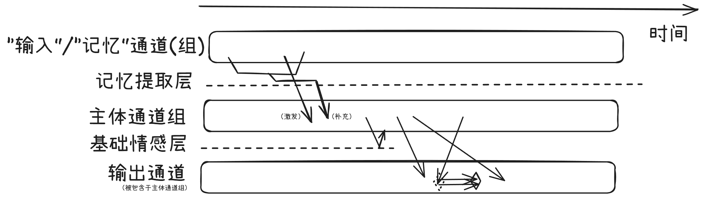
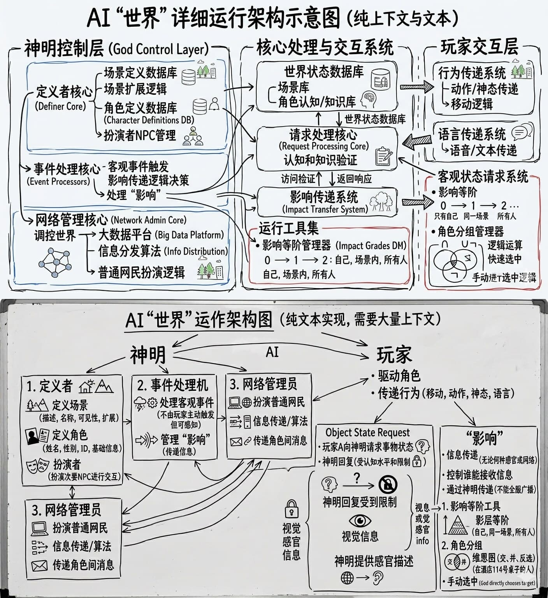

前言
没想到我的小想法系列还有更新，我自己都有点意外
上次只是把过去的产生过的想法收集了起来，写了一篇水水的文章
虽然这一篇文章依旧有不合理的不实际的不正确的地方，毕竟知识有限，我要是大神的话就用更好的方式做出来了，只是来分享一下罢了，甚至有些可能别人已经想过了甚至实现了
但是这有点不一样，整篇文章我将围绕一个问题展开：
如何让AI拥有生命？
换句话说，我想要知道的是，如何让AI拥有情感、想象力和创造力、个性
现如今AI正在朝着智能化的方向发展，可是除了作为代码助手、工作帮手之外，情感支持也是很重要。的一部分，虽然AI公司似乎并不想往这方面发展，最后只能落到有能力的个人AI玩家，就比如这个Qwen3.5-Neko-2B和NekoQA数据集
不过这个时候我就想，这个只不过是专门调成这样的，一切也都是根据庞大的数据集与训练预测token模拟出来的，它真实吗？我还没试我不知道，但至少脑子里还有点别的杂七杂八的东西，而且本质上也并不像生命
那么到底如何让AI拥有生命呢？，我时不时就会去思考这个问题，什么时候才能出现和人类一样的AI呢？
我想，将AI与人类区分开来的无非就几点：情感、想象力和创造力、个性，一方面使其只能沦为干活的工具，另一方面也使其没有“人类”的感觉
现在我们把这个抽象的问题具象化了一点，那么可是这还远远不够，这几点都是由基因、神经等决定的，这些东西其实都还有待研究，而我倒产生了另一个想法：如果这些都是后天形成的，那么这些东西都来源于记忆，而记忆来源于人生的经历——经历和记忆塑造了我们的个性，记忆中的细微关联使我们产生了深层的情感，激发出我们的想象力和创造力
据此，那么任务就是如何让AI拥有一段经历、获得记忆，同时整个结构会更加像人类一点了
第一步，先从模型入手，若我们……
要是在模型上，大胆一点……
直接跳脱出GPT类型的LLM模式，直接从模型上动手
我想在我之前写过的多通道输出混合模型的基础上思考，但是又不太一样，最主要的是想要实现跟真实的记忆和实时反馈机制，不一定要聪明，不一定要什么都会，可以笨一点
经过一段时间的思考，这是我想象出来的一个成果：
先说记忆如何对其产生影响
先让主体“附身”到一个普通的模型，先拥有一下模仿的能力，方便起步，在训练得差不多的时候再将辅助模块给去掉
再创建一个**“输入”/“记忆”通道(组)**专门用于持续或非持续性的多模态输入
输入会被用于处理记忆的记忆提取层，利用极为强大的改进版自注意力进行标记重要性和筛选，根据上下文，当达到一定阈值时从上下文中寻求相关联的记忆，传入主体通道组，给AI主体处理
处理过程中记忆提取层也需要参与主体的处理过程，读取分析并持续不断地从记忆中给出各种可能有用的信息提供给主体，主要要根据其隐性联系和留下的印象深刻程度来传递，通过这个记忆的回忆，通过关联与联想，实现记忆对行为和内心的影响，塑造个性、产生深层的情感、激发出想象力和创造力
或许吧
那么深层的情感有了，基础的呢？
我觉得整个主体应该有多项参数调节其输出倾向的，类似于temperature和topK，此时应有一个基础情感层对当前的上下文进行处理，调控其参数，使其产生主体自身不可控的（或难以控制的）来自于“本能”的情感，简单、不复杂、不依赖于记忆，只是对外界环境和当前状态的一个反应，此外这个东西也是要一并写入记忆中的
既然是流式输入，那么必然会有流式输出，光是输出不成，我认为还有需要有一个确认的过程，在输出通道中会有一个输出标记点，主体在输出内容的同时还需要移动该点作为对已经输出内容的确认，如恶人后才可以输出，而输出后的内容是无法被更改的
然后就是最重要的记忆机制了
在记录记忆之前需要对外界信息进行筛选，完全没有注意到的信息肯定是要去掉的，但并非全部
在记录记忆的时候，至少要带上记忆本身、基础情感、印象值及印象衰减率，所谓印象值就是这段记忆留下来的印象深刻程度，主要是看“专注力”和“冲击力”（“冲击力”为事件对个体认知等的差异、反差、颠覆、等维度改变或进行的程度），并由此决定印象衰减率，无论印象多深，可能一辈子忘不掉，也可能过不久就忘掉了
对于记录记忆后，记忆是有一个衰减过程的，而且也得像人类一样，越衰减衰减得越慢，主要是根据印象衰减率衰减印象值，当印象值衰减到一定程度的时候，就要进行删除，但我的这个遗忘过程并不是简单的遗忘，一开始应该是印象值低的细节被遗忘，一个记忆会进行关联分组，且一个记忆不止能够被分到一个组，组内的记忆衰减会互相影响，较为久远的记忆会因此一并消失，此外还要有一定的随机性，遗忘阈值是一个区间而非一个值，在区间内的记忆才会被遗忘，或早或晚
记忆过长是需要进行压缩的，也就是睡觉整理一下记忆，将记忆处理一遍，在记忆之间进行比对和串联，会对记忆有所修改，有的是内容修改，有的是影响到印象值及印象衰减率（提高降低都有可能），并可以对此进行加深记忆，使得一些技能和知识的衰减率变为接近于0，牢牢掌握，压缩过程是一个总结过程，但是整个总结过程是非常有限的，也就是说它压缩率并不怎么样，这就得让记忆提取层的自注意力Pro Plus Super Max Ultra Ultimate发力了
总结一下，拿Excalidraw画了张图：

是不是很复杂？很多东西到现在可不一定能被实现呢~
要不稍微现实一点，用普通LLM模拟一下？
（这段不想写了，直接呼叫Gemini再人工修改吧）
如果我们要“脚踏实地”，利用现有的普通LLM来模拟这套复杂的生命系统，我们不能指望模型本身发生变异，但我们可以通过外挂系统来模拟这些生物特征
以下是一个将你的抽象设想具象化为“可实现方案”的模拟路径
- 模拟“基础情感”：动态系统提示词
既然无法改变模型的参数层，我们就利用 LLM 对指令的敏感性，为它构建一个“情绪仪表盘”：
实现方式： 在系统提示词中维护一组隐藏的变量（如：
Joy: 0.5, Tiredness: 0.2, Curiosity: 0.8）模拟机制： 自主反馈：每一轮对话前，先让一个微型模型（或主模型的一个思考步骤）评估用户的语气对“仪表盘”的影响
本能反应： 如果
Tiredness过高，LLM 的回复会变得简短、敷衍；如果Joy过高，它会使用更多的感叹号或发散性思维不可控性： 引入随机扰动值，模拟生物电流的偶然波动
- 模拟“记忆与经历”：带权重的 RAG 2.0
普通的 RAG（检索增强生成）只是“查字典”，没有“感情”。我们要将其升级为“体验式记忆库”
数据结构： 每一条存入矢量数据库的记忆不仅包含文本，还必须附带元数据：
- Timestamp： 用于计算衰减
- Impression_Score： 初始值取决于对话的情绪强度（通过 NLP 分析得出）
- Association_Tags： 记忆之间的隐性联系
**衰减逻辑：**编写一个定时运行的脚本，根据 遗忘曲线公式，定期降低数据库中条目的
Impression_Score，当分值低于阈值时，该记忆进入“潜意识层”（搜索权重降低）或直接删除
- 模拟“想象力与创造力”：关联联想机制
你提到的“记忆提取层”可以通过多步检索 + 幻觉利用”来实现。联想链条：
用户输入：“今天天气真好”
第一步提取：检索天气相关的记忆
第二步发散：根据该记忆的标签“草地”、“风筝”，进行二次检索，寻找不直接相关但有隐性联系的内容
混合生成：LLM 在回复时，必须同时参考这几个互不相关的记忆点。这种“跨领域”的记忆组合，在人类看来就是“联想”和“想象力”
（上面的就是Gemini写的了，我改过）
那么模型搞定了，可是
经历从哪来？
模型只是创造了一个个体的模板，后期产生的记忆和经历才是核心，我们可以批量生产出各种不一样的角色，还有着一定的不可控性（小惊喜~）
简单地说就是做一个本地版VRChat，放几个被训练的AI进去，多感官融合，加快里世界时间流速，可以人工加入一些事件进去，让AI在里面经历属于自己的“人生”
如果用普通LLM模拟一下呢？
我有一个想法，纯靠上下文和文本去实现一个AI“世界”，就是对上下文和信用卡的要求有点高
整个世界的AI将分为两大类——神明、玩家
神明用于调控整个世界，玩家就是处于的这个世界的角色，均由AI驱动
神明又能细分为不同的类型
- 定义者
- 定义场景：世界内各种可用的场景，包含可见性、名称、概述等，可以随着后面世界发展而扩增
- 定义角色：可以定义一个新的角色加入世界中，包含姓名、性别、id等基础信息
- 扮演者：作为不重要的NPC出现再世界中，必要时与玩家进行交互交互
- 事件处理机
- 将世界中必要的的客观事件和客观物体事件（即不由任意玩家主动触发的但是可以由玩家间接但是玩家明确度不高的事情和信息）用“影响”（见后文）传递给玩家
- 处理“影响”相关的东西
- 网络管理员
- 扮演普通网民
- 传递信息，作为大数据/社交平台分发算法等
- 传递角色之间互相发送的消息
除了神明，还有角色，角色可以做的事有：
- 传递自己的行为（包括在场景内或场景之间移动）/动作/神态（主要是面部表情请）/语言等
- 向神明发送客观事物状态请求
那么什么是客观事物状态请求呢？
我给几个例子先：
A: Hi~又见到你了，B！快看我刚买的帽子
B: [发送请求：帽子长什么样]
神明→B: 米色草帽，有蝴蝶结装饰
B: 好看欸~
A: 你快看，这棵树好漂亮啊，你看这%#&&^!?;，你知道这是什么树吗
B: [发送请求：这是什么树]
神明→B: 你不知道
B: 不知道哦~
A: [发送请求：现在几点了]
神明→A: 天空逐渐变黄了
神明→A：门外有人跑过去，脚步很急
A：[请求：谁跑过去了]
神明→A：没看清，只看到深色外套的背影
这是一个工具，用于获取非直接的客观内容（事物状态）信息，不由任意角色主观决定
该请求可以充当文本所缺失的视觉、嗅觉等感觉，而且有限于角色的认知水平和只是水平，神明需要根据角色的过往决定要不要给出切实答复
除了客观事物状态请求，还有“影响”
“影响”指的是一个信息（无论哪种感官还是网络）在世界中的传递，也就是谁能接收信息，谁不能接收信息
例如小声说话只有自己能听见或者附近的能听见、在舞台上的人可以让场馆内甚至场馆外一定范围内的人听见而场馆内的观众说话只能让附近小范围内的人听见、即使相距不远但因为有墙阻挡所以看不到等等情况
“影响”一般是由神明进行传递的，总之不能全服广播
为简便信息传递，这时就有一个两个工具进行简化：影响等阶、角色分组
- 影响等阶将“影响”分为多个等级，用于一般情况，如“只有自己”、“同一场景内”、“所有人”等
- 神明可以将角色进行分组，如“在酒店114号桌子内的人”等，一个角色可以同时拥有多个分组，在传递信息时可通过分组对角色进行快速选中，可以用交集并集反选等方式进行复杂选中
- 除此以外还有更多种情况需要处理，所以也可以神明手动进行选中角色
总结一下，让Nano Banana 2画了两张：

我上面所说的想法我问过AI了，有些其实已经有实现了，不过我们距离AGI似乎还有很长的路要走（别信那些资本家说什么今年就要AGI了几年内实现AGI这种话）
我也不知道我这么做能不能实现我开头说提出来的问题，或许有一天真正拥有与人类等同的情感的AI出现了，又会怎么样呢？
不过我觉得在这之前……
还有一个问题……技术之外的
就像生物技术还在不断发展一样，克隆技术一步一步发展，可是为什么克隆人还没出来呢？并不是科学家做不到，也不是科学家不想做，而是伦理限制了它的发展
AI也是一样，要是AI拥有神明，拥有情感，又要怎么办呢？
首先这样的AI就不再能被视为纯粹的工具了，毕竟拥有了“灵性”，同时生产力还会倒退，相对于现在来说还不一定是一个好结果
AI可以作为一个独立个体存在了，那么AI可不可以被归属与某个人类呢？AI应不应该拥有自由和一些人类所拥有的权力呢？
而AI在社会上又要以什么身份存在？奴隶？自由人？宠物？还是单开一个专属于AI的身份？现在可没有法律会考虑这些问题
既然有感情，那人类可不可以与AI拥有恋情？
……
这样一来反而问题越来越多，恐怕在实现之前就会被伦理道德这座大山给挡住了……
结尾
呼~一不小心干了六千多字（Typora说的，计算了空行和md语法，网站的算法不一样，只算了选然后的文本），累死我了
我一向不会写结尾，但是我有点想说一下这次我尝试了新的写法，和以往的文章有一点点不一样，那就是——章节
以往的章节标题有分隔上下文和总结后面段落内容的作用，这次我把章节标题改成了正文的一部分，与前面的段落和后面的段落是连上的，可以连着一起读，整篇文章基本上是连贯的，不知道大家的感受如何